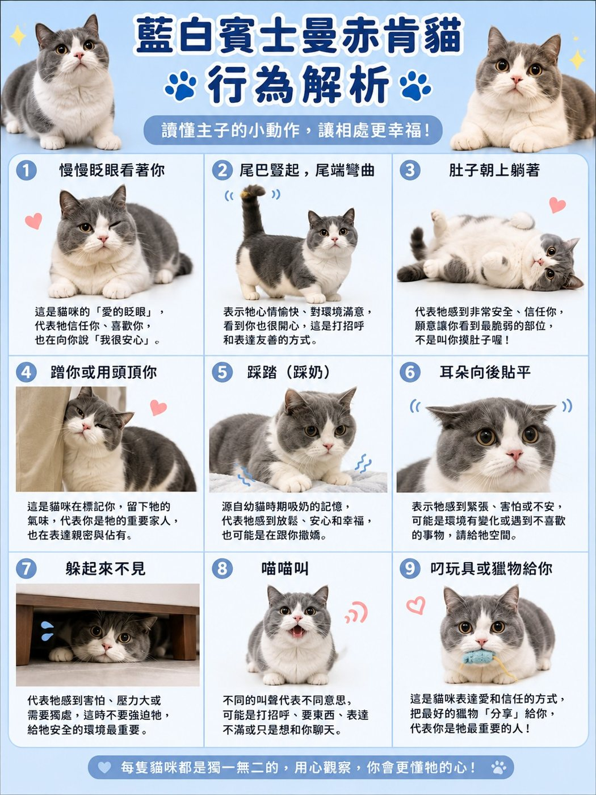
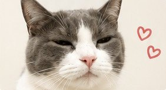
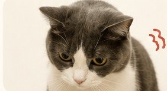
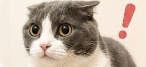
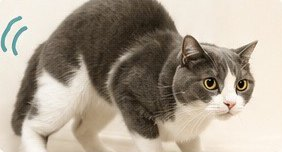
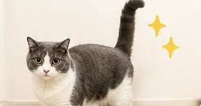
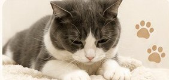
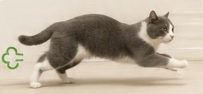
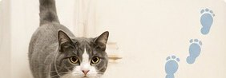

看懂貓咪身體語言讀懂主子的小動作
BODY LANGUAGE
每個小動作
每個小動作
都是牠在跟你說話
讀懂主子的身體語言，相處會更輕鬆 ~ 也比較不會被哈氣
九個動作12 個貓語動畫小測驗
01
先看這段動畫
貓咪身體語言 一次看懂
同樣是躺著，露出肚子和縮成一團意思完全不一樣 ~ 看身體語言要看整體：耳朵、尾巴、眼睛、身體姿勢一起看。
02
九個常見動作
以香菇同款的藍白賓士曼赤肯為例

🔍 點圖片可以放大看😌
慢慢眨眼看著你貓咪的「愛的眨眼」~ 牠信任你、覺得很安心。你也可以慢慢眨眼回應牠信任
🐈
尾巴豎直 尾端微彎心情好、對環境滿意，看到你很開心 ~ 這是在打招呼開心
🙃
肚子朝上躺著非常有安全感、信任你，願意讓你看到最脆弱的地方 ~ 但不一定是叫你摸肚子，很多貓一摸就變臉信任 但別亂摸
🫶
蹭你、用頭頂你在你身上留下牠的氣味 ~ 代表你是牠重要的家人親密
🐾
踩踏（踩奶）來自小時候喝奶的記憶 ~ 感到放鬆、安心、幸福放鬆
👂
耳朵往後貼平緊張、害怕或不安 ~ 可能環境有變化或遇到不喜歡的事，這時候先給牠空間緊張
🫣
躲起來不見害怕、壓力大或需要獨處 ~ 不要強迫牠出來，給牠安全的環境最重要需要空間
🗣️
喵喵叫不同的叫聲意思不同，可能是打招呼、要東西、不滿意，或只是想跟你聊天溝通
🎁
叼玩具或獵物給你把牠覺得最好的東西「分享」給你 ~ 你是牠很重要的人愛你
03
貓咪其實一直在跟你說話
最常見的 12 個貓語行為

1慢慢眨眼我信任你 我很放鬆貓界的「我愛你」 ❤

2不敢直視你心虛模式啟動通常剛做壞事 🤣

3瞳孔放大 耳朵往後我現在很緊張 不要再逼我了可能下一秒開扁 ⚠️

4螃蟹步＋側跳快陪我玩！！超經典屁孩模式 🤣

5用頭狂蹭你你是我的人在留味道＋撒嬌

6尾巴直直豎起來今天心情很好！尾巴微抖＝超開心

7呼嚕呼嚕聲我現在很舒服⚠️ 不舒服時也可能呼嚕

8一直踩奶很安心很幸福多是幼貓時期的安全感延續

9突然爆衝暴走精力太滿啦！！尤其半夜最常見 🤣

10把屁股對著你我超信任你雖然畫面不一定舒服

11一直跟著你走牠其實超黏你只是貓咪愛得很低調 🥹

12突然咬你一下有時候不是討厭你可能是玩過頭、太嗨、摸太久
每隻貓個性不同 ~ 理解牠的行為 就是最好的愛與陪伴 ❤
🖼️ 看整張海報（可以存起來）
04
小測驗
看完了 考考你
主子在你面前翻身露出肚子，你應該？
露肚子代表牠很有安全感、很信任你，但肚子是很敏感的地方 ~ 很多貓被摸肚子會反射性抓咬。先從牠喜歡的頭、下巴、臉頰開始，牠主動要的時候再說 😺
05
這些變化 要多留意
!
原本親人 突然一直躲
個性突然改變，可能是身體不舒服 ~ 貓很會忍痛
!
一直舔同一個地方、碰到某處就哈氣
那個位置可能在痛
!
叫聲變多、半夜一直叫
熟齡貓特別要注意，可能是身體或認知的變化
NEXT
🔊貓咪讀心術（叫聲）聽聲音 懂主子的心情›
🏡新貓到家 7 天新貓為什麼一直躲›
🕰️香菇的一天八歲貓的真實日常›
🍄想知道香菇平常怎麼吃、怎麼保養？看香菇爸的日常照護清單›
還可以看這些
🐱 還是不確定你家適合哪種照護方式？
加入護貓社群 每週跟香菇爸一起學養貓
💬拍給香菇爸看主子做了一個動作看不懂 ~ 錄下來傳給我↗
加入護貓社群 每週跟香菇爸一起學養貓
關於這一頁
每隻貓的個性和表達方式都不一樣，這裡是常見的解讀方式
如果行為突然改變，請先排除身體不舒服，再從環境和相處方式找原因
© 2026 香菇爸・原創內容